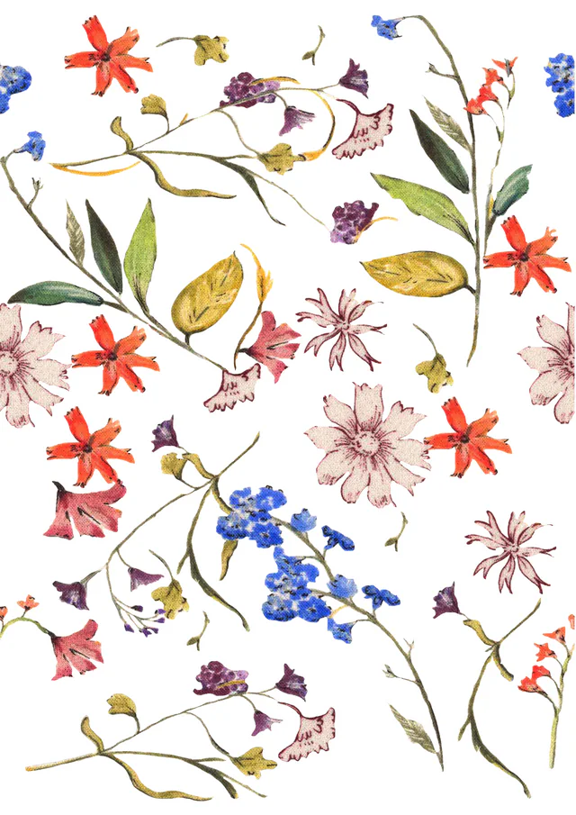

Surface pattern & textile design
All-over prints drawn in repeat, colour-matched and tested at tile scale.
- Florals, tropicals, geometrics, stripes and toile
- Tile-tested at 3×3 and larger, at print scale
- Colourways applied across the whole repeat